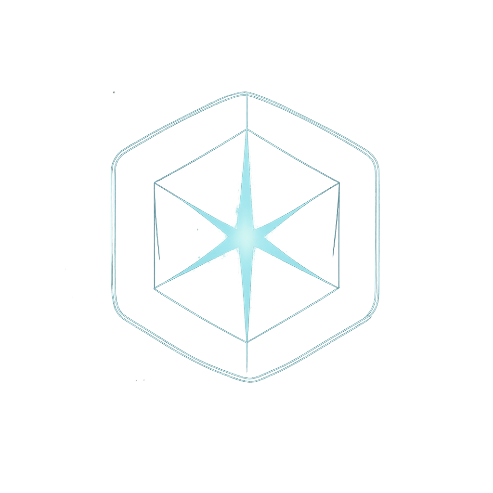

JirPlays
Choose your path
🐼🐼
Creator Hub
Streams, uploads, schedules, and community. Cozy chaos powered by pandas and red pandas.
Enter Creator Hub

Obsidian Accords
A Star Trek-inspired, fan-created archive of starships, stations, and narrative arcs.
Access the Accords